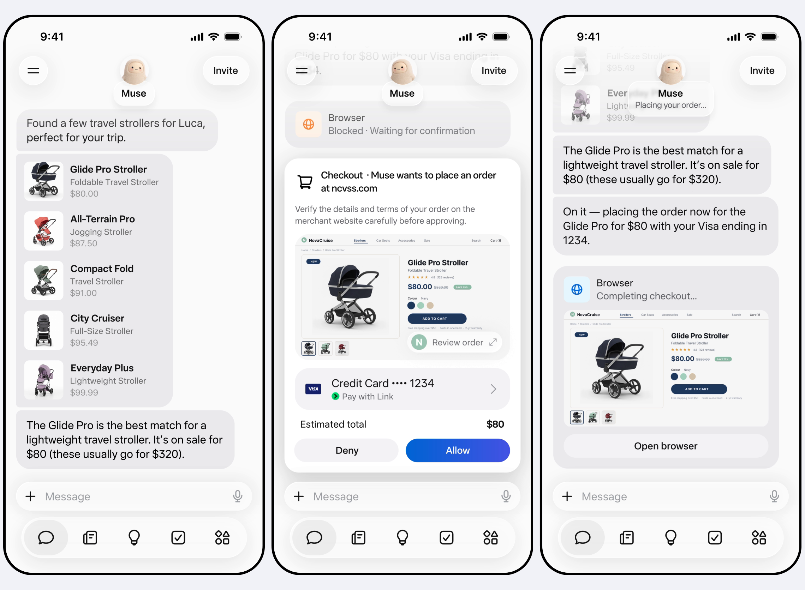
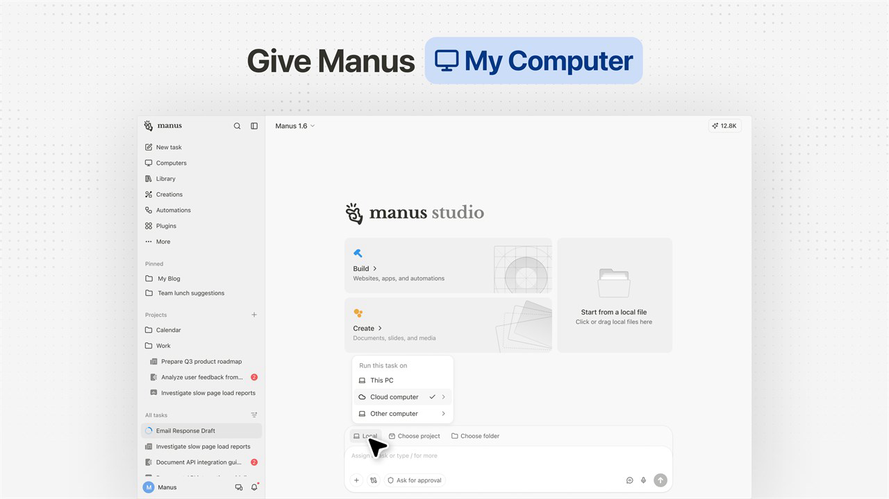
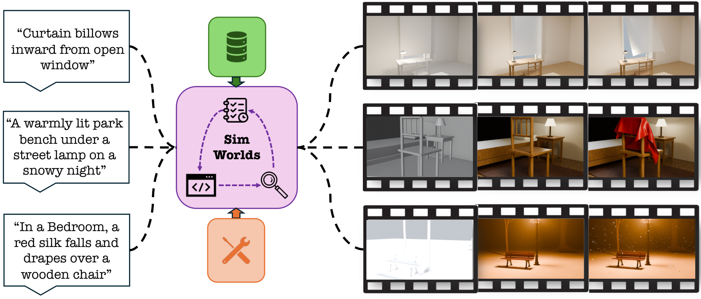
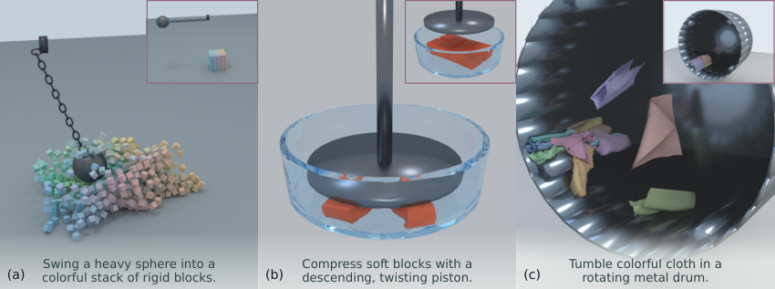
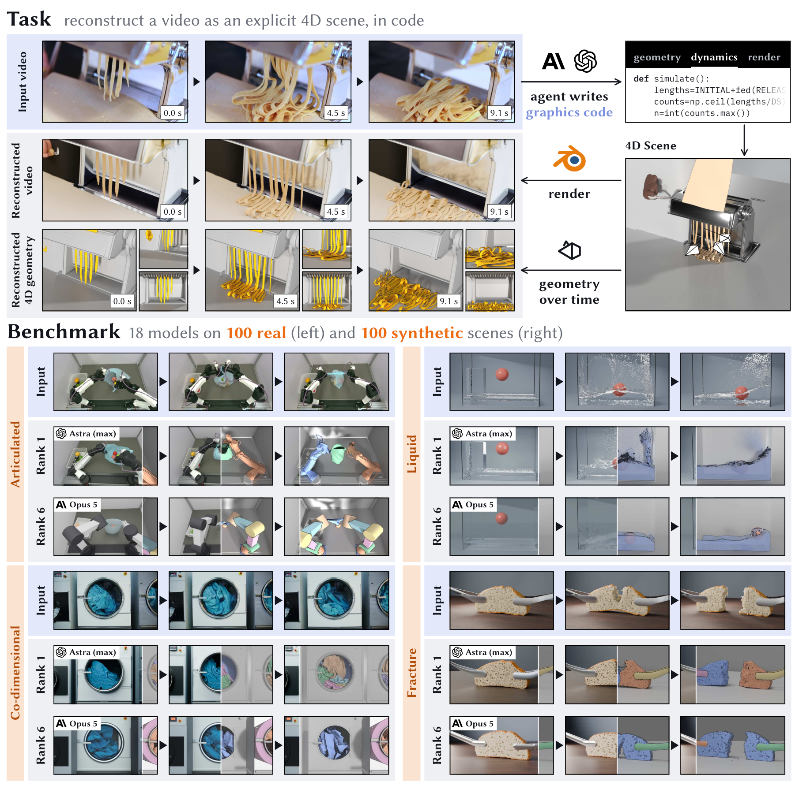

二、国内外研究现状
□ 走向真实世界：个人智能体（Personal Agent）与物理世界智能体（Physical Agent）
个人智能体产品
OpenAI dots · 2026.09：云端机器 + 应用连接器

Meta Muse · 2026.09：云端安全 VM 内执行

Manus · 2025.03：云 VM，2026 年起支持本机

OpenClaw · 2026.01：运行于用户自己的设备
物理世界生成与机器人使用

SimWorlds [Liu+, 2026]：文本生成物理世界

Text2Sim [Xiong+, 2026]：生成并修复仿真

4DCodeBench [Shen+, 2026]：以代码复现 4D 运动
RobotWorld [Yang+, 2026]：84 个机器人使用任务
优点：个人智能体已具备长期记忆与跨应用执行；Coding Agent 已能生成可运行的物理仿真与机器人控制程序
不足：多在云端通用环境中执行，职业特质不鲜明；物理世界生成仅在原始条件下检验表象，缺少跨条件物理验证